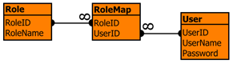

This is release 1.0.3 of a small collection of modules that allow Java programs to perform user authentication against a number of providers. This code is released under the GNU LGPL (Lesser General Public License). It includes a version of Tomas Restrepo's WSSPI library that jumps through all the hoops that the must be jumped through to authenticate a user under Win32. Much credit is due to Tomas; I took a look at the code I was going to have to write to perform this, apparently simple, task and came close to giving up. Tomas' excellent code saved the day. Please don't contact him with questions about this release; the bits that you're likely to need help with are all my responsibility.
I see two main audiences for this release: those who want to use it as-is and those who are looking for examples of JAAS modules on which to base their own implementations. In either event if you have any comments to make or anything to contribute please get in touch with me, Andy Armstrong.
If you don't already know what JAAS is go and find out about it at Sun's JAAS homepage. In essence it's a port of the concept behind PAM (Pluggable Authentication Modules) to Java. It aims to provide a consistent API for authenticating users that is capable of supporting a variety of different authentication providers.
This release contains three login modules. com.tagish.auth.DBLogin is also platform independent and allows users to be authenticated against a JDBC data source. com.tagish.auth.FileLogin is platform independent and allows users to be authenticated against a text file containing usernames, passwords and roles. com.tagish.auth.win32.NTSystemLogin is a Windows NT/2000 specific login module that allows users to be authenticated against an NT domain.
This is the first release of these modules. The NTSystemLogin module has been tested on a NT server with IIS and Tomcat. The other two modules have only currently been tested using the test harness in this release. Please report any problems and suggest any improvements to me. The following are definately on my list of things to do:
This module allows users to be authenticated against a database which is connected to using JDBC. The database should contain these tables:

The table User contains plaintext usernames and MD5 hashed passwords. The table Role contains a number of role names. The table RoleMap maps roles to users so that each user may have a number of roles. This module is configured with an entry in the config file like this:
DBLogin
{
com.tagish.auth.DBLogin required dbDriver="sun.jdbc.odbc.JdbcOdbcDriver" dbURL="jdbc:odbc:DBLogin";
};
The following parameters may be specified:
| dbDriver | The name of the JDBC driver to load to access the database | required |
| dbURL | The JDBC connection URL to use when accessing the database | required |
| dbUser | The username to connect to the database with | optional |
| dbPassword | The password to connect to the database with | optional |
| userTable roleMapTable roleTable |
The names of the tables which default to "User", "RoleMap" and "Role" | optional |
A user logged on using this module will have a number of Principals (actually com.tagish.auth.TypedPrincipal) associated with them. Firstly there will be a USER Principal representing the user's name. Additionally there will be a GROUP principal for each role that is associated with the user.
This module allows users to be authenticated against a list of accounts stored in a plain text file (analagous but not identical to /etc/passwd). Password files look like this:
# Passwords for com.tagish.auth.FileLogin test1:5a105e8b9d40e1329780d62ea2265d8a:root:administrator wtest2:ad0234829205b9033196ba818f7a872b
This example contains details for two users test1 and test2 with passwords of "test1" and "test2" respectively. Notice that the password is stored as an MD5 hash of the plain text. User test1 has roles "root" and "administrator" while test2 has no roles.
The FileLogin module is configured with an entry in the config file like this:
FileLogin
{
com.tagish.auth.FileLogin required debug=true pwdFile="/path/to/passwd";
};
The following parameters may be specified:
| pwdFile | The name of the password file | required |
As with DBLogin a user logged on using this module will have a number of Principals (actually com.tagish.auth.TypedPrincipal) associated with them. There will be a USER principal representing the user's name and a GROUP principal for each role that is associated with the user.
This module which is only available on Windows NT and 2000 allows users to be authenticated against an NT domain. The module will request a username, password and optionally domain (the domain to use may be named in the config file) and attempt to retrieve the user's credentials using them. Depending on settings in the config file the returned Principals may have human readable names (eg "administrator"), NT SID format names (eg "S-1-5-32-544") or both. Note that if the system on which authentication is performed is temporarily out of contact with its PDC it will not necessarily be able to return human readable names, but it will be able to return SID format names.
The NTSystemLogin module is configured with an entry in the config file like this
NTLogin
{
com.tagish.auth.win32.NTSystemLogin required returnNames=true returnSIDs=false defaultDomain="domain";
};
The following parameters may be specified:
| returnNames | Principals with human readable names will be created | optional |
| returnSIDs | Principals with names in NT SID format will be created | optional |
| defaultDomain | Domain to authenticate against. If this is ommitted the module will raise a TextInputCallback to request the Domain if it is not supplied here. | optional |
A user logged on using this module will have a number of Principals (actually com.tagish.auth.win32.NTPrincipal) associated with them. There will be a USER Principal representing the user's name, a GROUP principal for each NT group the user is a member of and a DOMAIN Principal representing the NT Domain that authenticated the user.
Andy Armstrong, Tagish Ltd, 17th February 2003